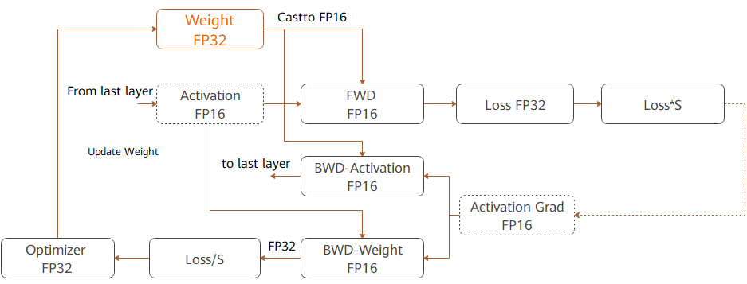

Enabling Mixed Precision
Linux Ascend GPU Model Training Intermediate Expert

Overview
The mixed precision training method accelerates the deep learning neural network training process by using both the single-precision and half-precision data formats, and maintains the network precision achieved by the single-precision training at the same time. Mixed precision training can accelerate the computation process, reduce memory usage, and enable a larger model or batch size to be trained on specific hardware.
For FP16 operators, if the input data type is FP32, the backend of MindSpore will automatically handle it with reduced precision. Users could check the reduced-precision operators by enabling INFO log and then searching ‘Reduce precision’.
Computation Process
The following figure shows the typical computation process of mixed precision in MindSpore.

Parameters are stored in FP32 format.
During the forward computation, if an FP16 operator is involved, the operator input and parameters need to be cast from FP32 to FP16.
The loss layer is set to FP32.
During backward computation, the value is multiplied by Loss Scale to avoid underflow due to a small gradient.
The FP16 parameter is used for gradient computation, and the result is cast back to FP32.
Then, the value is divided by Loss scale to restore the multiplied gradient.
The optimizer checks whether the gradient overflows. If yes, the optimizer skips the update. If no, the optimizer uses FP32 to update the original parameters.
This document describes the computation process by using examples of automatic and manual mixed precision.
Automatic Mixed Precision
To use the automatic mixed precision, you need to invoke the corresponding API, which takes the network to be trained and the optimizer as the input. This API converts the operators of the entire network into FP16 operators (except the BatchNorm and Loss operators). You can use automatic mixed precision through API amp or API Model.
The procedure of using automatic mixed precision by API amp is as follows:
Introduce the MindSpore mixed precision API
amp.Define the network. This step is the same as the common network definition. (You do not need to manually configure the precision of any specific operator.)
Use the
amp.build_train_networkAPI to encapsulate the network model and optimizer. You can learn how to set parameterlevelthrough https://www.mindspore.cn/doc/api_python/en/r1.1/mindspore/mindspore.html#mindspore.build_train_network. In this step, MindSpore automatically converts the operators to the required format.
A code example is as follows:
import numpy as np
import mindspore.nn as nn
from mindspore import Tensor, context
import mindspore.ops as ops
from mindspore.nn import Momentum
# The interface of Auto_mixed precision
from mindspore import amp
context.set_context(mode=context.GRAPH_MODE)
context.set_context(device_target="Ascend")
# Define network
class Net(nn.Cell):
def __init__(self, input_channel, out_channel):
super(Net, self).__init__()
self.dense = nn.Dense(input_channel, out_channel)
self.relu = ops.ReLU()
def construct(self, x):
x = self.dense(x)
x = self.relu(x)
return x
# Initialize network
net = Net(512, 128)
# Define training data, label
predict = Tensor(np.ones([64, 512]).astype(np.float32) * 0.01)
label = Tensor(np.zeros([64, 128]).astype(np.float32))
# Define Loss and Optimizer
loss = nn.SoftmaxCrossEntropyWithLogits()
optimizer = Momentum(params=net.trainable_params(), learning_rate=0.1, momentum=0.9)
train_network = amp.build_train_network(net, optimizer, loss, level="O3", loss_scale_manager=None)
# Run training
output = train_network(predict, label)
The procedure of using automatic mixed precision by API Model is as follows:
Introduce the MindSpore model API
Model.Define the network. This step is the same as the common network definition. (You do not need to manually configure the precision of any specific operator.)
Create dataset.You can learn detail step at https://www.mindspore.cn/tutorial/training/en/r1.1/use/data_preparation.html.
Use the
ModelAPI to encapsulate the network model and optimizer. You can learn how to set parameteramp_levelthrough https://www.mindspore.cn/doc/api_python/en/r1.1/mindspore/mindspore.html#mindspore.Mode. In this step, MindSpore automatically converts the operators to the required format.
A code example is as follows:
import numpy as np
import mindspore.nn as nn
from mindspore.nn.metrics import Accuracy
from mindspore import context, Model
from mindspore.common.initializer import Normal
from src.dataset import create_dataset
context.set_context(mode=context.GRAPH_MODE)
context.set_context(device_target="Ascend")
# Define network
class LeNet5(nn.Cell):
"""
Lenet network
Args:
num_class (int): Number of classes. Default: 10.
num_channel (int): Number of channels. Default: 1.
Returns:
Tensor, output tensor
Examples:
>>> LeNet(num_class=10)
"""
def __init__(self, num_class=10, num_channel=1):
super(LeNet5, self).__init__()
self.conv1 = nn.Conv2d(num_channel, 6, 5, pad_mode='valid')
self.conv2 = nn.Conv2d(6, 16, 5, pad_mode='valid')
self.fc1 = nn.Dense(16 * 5 * 5, 120, weight_init=Normal(0.02))
self.fc2 = nn.Dense(120, 84, weight_init=Normal(0.02))
self.fc3 = nn.Dense(84, num_class, weight_init=Normal(0.02))
self.relu = nn.ReLU()
self.max_pool2d = nn.MaxPool2d(kernel_size=2, stride=2)
self.flatten = nn.Flatten()
def construct(self, x):
x = self.max_pool2d(self.relu(self.conv1(x)))
x = self.max_pool2d(self.relu(self.conv2(x)))
x = self.flatten(x)
x = self.relu(self.fc1(x))
x = self.relu(self.fc2(x))
x = self.fc3(x)
return x
# create dataset
ds_train = create_dataset("/dataset/MNIST/train", 32)
# Initialize network
network = LeNet5(10)
# Define Loss and Optimizer
net_loss = nn.SoftmaxCrossEntropyWithLogits(sparse=True, reduction="mean")
net_opt = nn.Momentum(network.trainable_params(),learning_rate=0.01, momentum=0.9)
model = Model(network, net_loss, net_opt, metrics={"Accuracy": Accuracy()}，amp_level="O3")
# Run training
model.train(epoch=10, train_dataset=ds_train)
Manual Mixed Precision
MindSpore also supports manual mixed precision. It is assumed that only one dense layer in the network needs to be calculated by using FP32, and other layers are calculated by using FP16. The mixed precision is configured in the granularity of cell. The default format of a cell is FP32.
The following is the procedure for implementing manual mixed precision:
Define the network. This step is similar to step 2 in the automatic mixed precision.
Configure the mixed precision. Use
net.to_float(mstype.float16)to set all operators of the cell and its sub-cells to FP16. Then, configure the dense to FP32.Use TrainOneStepCell to encapsulate the network model and optimizer.
A code example is as follows:
import numpy as np
import mindspore.nn as nn
from mindspore import dtype as mstype
from mindspore import Tensor, context
import mindspore.ops as ops
from mindspore.nn import WithLossCell, TrainOneStepCell
from mindspore.nn import Momentum
context.set_context(mode=context.GRAPH_MODE)
context.set_context(device_target="Ascend")
# Define network
class Net(nn.Cell):
def __init__(self, input_channel, out_channel):
super(Net, self).__init__()
self.dense = nn.Dense(input_channel, out_channel)
self.relu = ops.ReLU()
def construct(self, x):
x = self.dense(x)
x = self.relu(x)
return x
# Initialize network
net = Net(512, 128)
# Set mixing precision
net.to_float(mstype.float16)
net.dense.to_float(mstype.float32)
# Define training data, label
predict = Tensor(np.ones([64, 512]).astype(np.float32) * 0.01)
label = Tensor(np.zeros([64, 128]).astype(np.float32))
# Define Loss and Optimizer
loss = nn.SoftmaxCrossEntropyWithLogits()
optimizer = Momentum(params=net.trainable_params(), learning_rate=0.1, momentum=0.9)
net_with_loss = WithLossCell(net, loss)
train_network = TrainOneStepCell(net_with_loss, optimizer)
train_network.set_train()
# Run training
output = train_network(predict, label)
Constraints
When mixed precision is enabled, backprop network only can be generated by ‘AutoDiff’ block but cannot be defined by users. If user defines the backprorp network, a data type dismatching exepcetion may be thrown out by MindSpore.